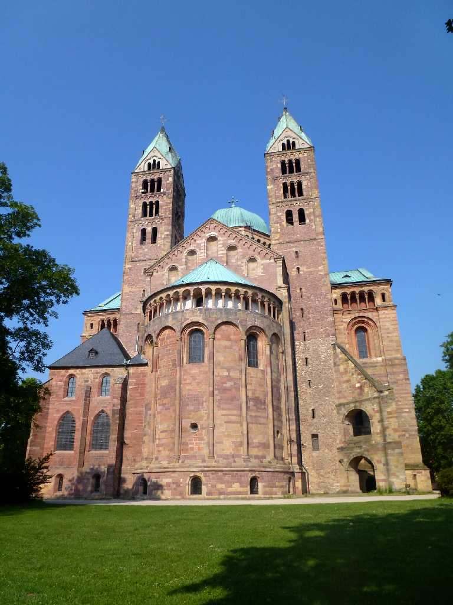
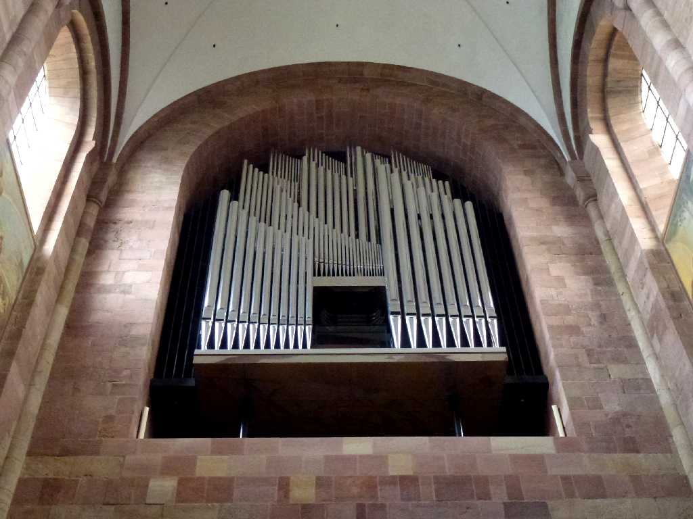
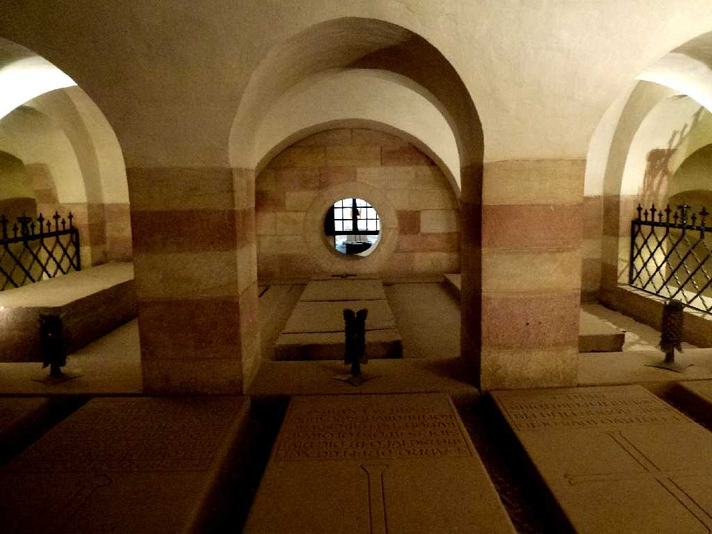
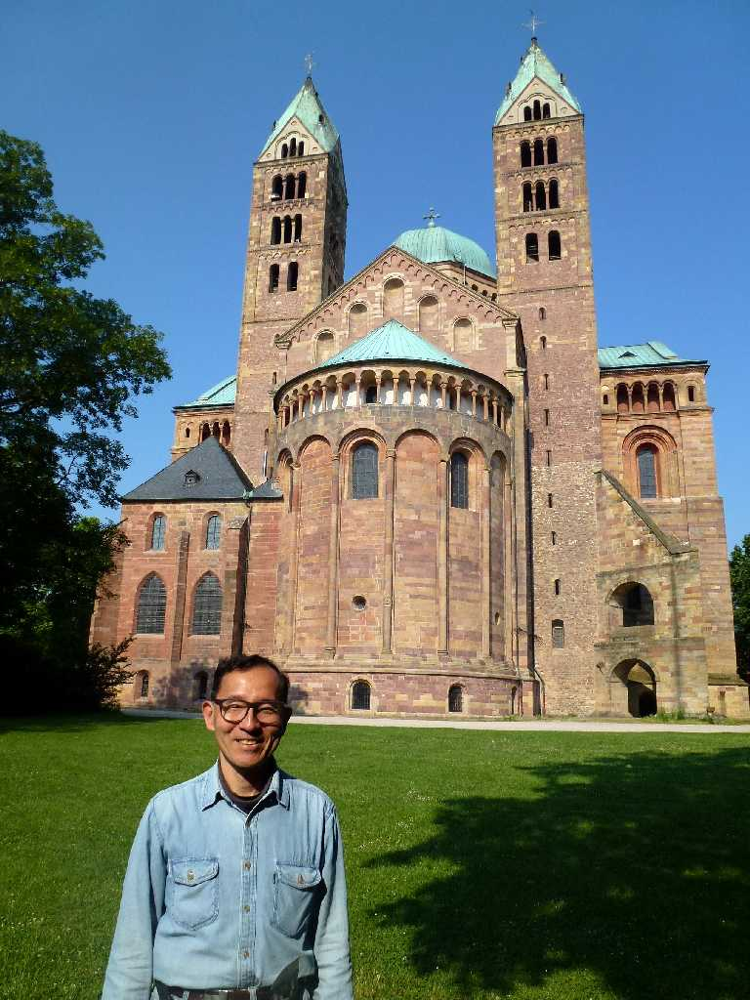

Kaiserdom Speyer
１０３０年に創られたシュパイアー大聖堂は神聖ローマ帝国の皇帝コンラート２世が祀られているハラ色の砂岩でできた世界最大のロマネスク教会 ドイツのロマネスクを告げる建物と云われている

Orgel
巨大パイプオルガン

Krypta Kaiserdom
地下聖堂は４６ｍ×３５ｍあるドイツ最大級で１０３９年から１３０８年までの２００年間の皇帝９人が眠っている

June 3 2014 Kaiserdom